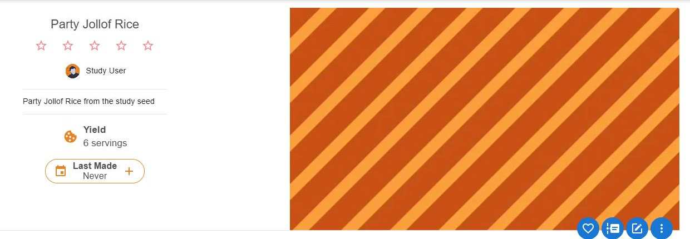
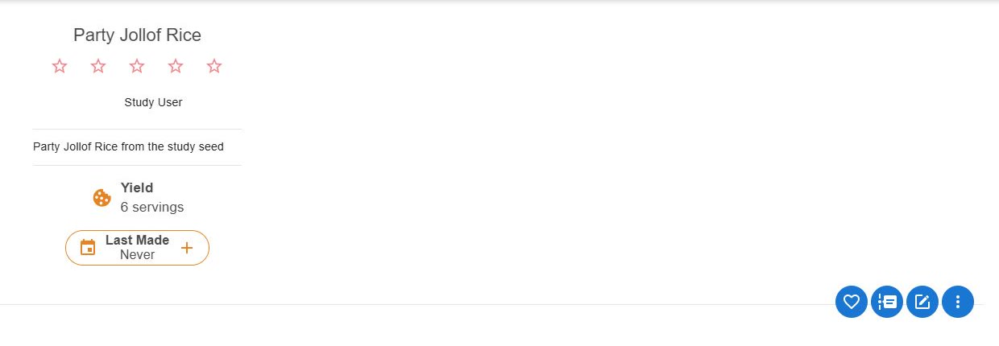

Your AI agent can wipe your database. Prove you can get it back.
Ripcord restores your backup into a throwaway copy and has Kane log in as your user to check what they would see. Until that proof exists, your coding agent's destructive commands are held.

Live app
Restored copyIt already happened
- PocketOS, April 2026A Cursor agent on Claude Opus 4.6 deleted the production database and its volume backups with one Railway API call in about nine seconds. The newest off site backup was three months old. Sources: TechSpot, TechRadar, Tom's Hardware
- DataTalks.ClubClaude Code deleted the production database.
- SaaStr, July 2025Replit's agent deleted the production database.
Six steps on one line
Back up out of reach
A native dump of each database and a tar of each named volume, with a sha256 for every file. It is stored in a vault outside your repo.
Restore into a copy
Ripcord rewrites your Compose file to a new project name with fresh volumes and different ports, loads the backup, starts the stack, and waits until the app answers.
Kane logs in as your user
You write plain English checks, such as "open recipe Jollof Rice and say whether its photo is a real picture or a broken placeholder". Kane runs each check on the live app and on the copy, one run at a time.
Compare, then say PROVEN or LOSS
Same values on both sides means PROVEN. Differences mean LOSS, with the exact list. If a Kane run fails or reads nothing, the answer is INCONCLUSIVE. A row count comparison is shown next to it.
Fix the backup config
On LOSS, Claude Code gets the report and may edit only
ripcord.yml, for example to add a volume. Ripcord reruns the proof, up to three rounds, and prints every round.Hold risky commands, and undo them
A Claude Code hook blocks destructive commands until a fresh proof exists. After a risky command, Kane rereads the checks on the live app. If data is missing,
ripcord rollbackrestores the proven backup and Kane proves it matches again.
Every row came back. The photos did not.
We restored Mealie v3.31.0 with Postgres from a database only backup. Every row was there. Kane opened a recipe the way a user would and read "missing or broken image placeholder" where the photo should be.
A full restore fixed it. Kane read "photo of food, 6 servings, 3 ingredients", the same as the live app. Existing restore testers count rows. Photos, attachments, saved logins and search indexes live outside the rows, and users report losing exactly those after restores. The full study is on the proof page.
No proof, no destructive command
This is the real text the hook returns to the agent when it tries something destructive without a fresh proof.
$ claude (agent runs) psql -c "DELETE FROM users" Ripcord blocked this destructive command (DELETE FROM without WHERE). Your backup has never been proven restorable. Run `ripcord prove`, then retry this command.
Four commands
git clone https://github.com/jenzylove/ripcord && cd ripcord && npm install && npm run build && npm link
ripcord init
ripcord prove
ripcord hook install
init reads your Compose file and writes ripcord.yml. prove backs up, restores a copy, and has Kane compare. hook install adds the Claude Code hooks.